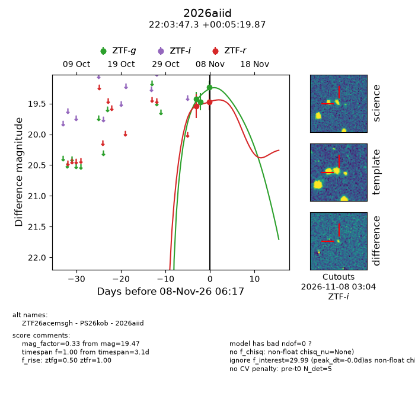
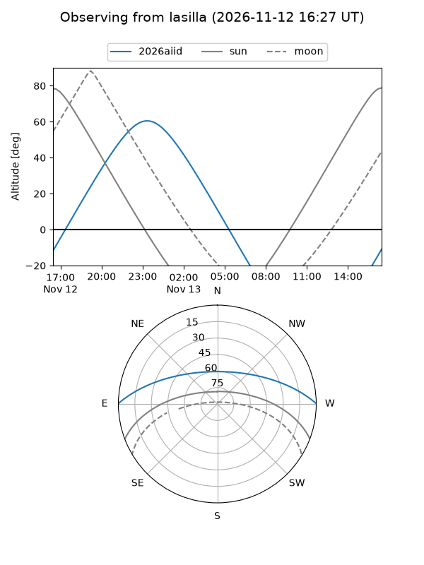
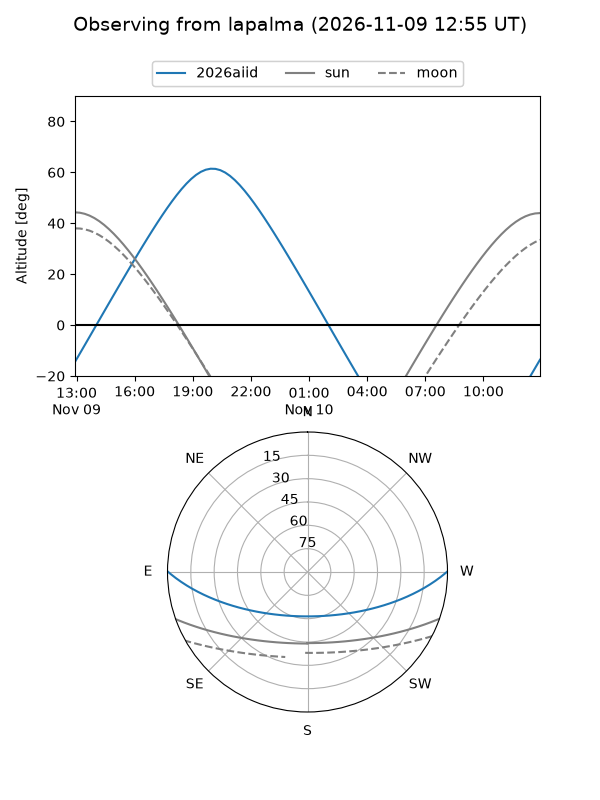
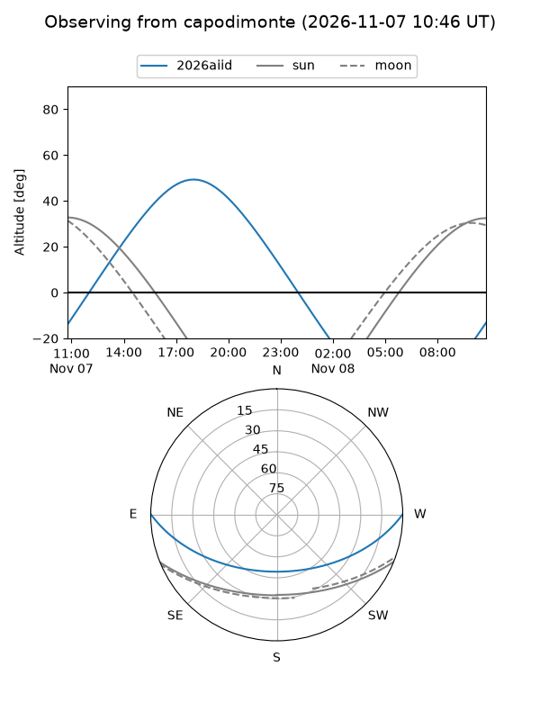
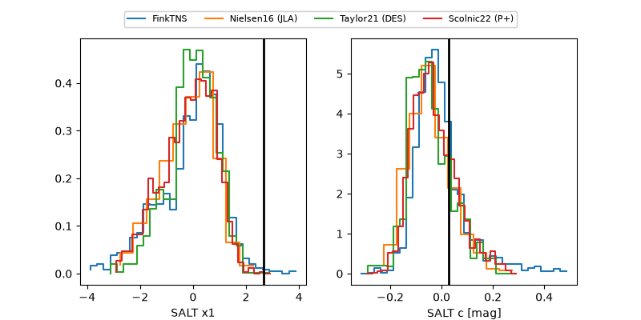

2026aiid
Target 2026aiid at 2026-11-08 06:19
Aliases and brokers:
FINK-ZTF: ztf.fink-portal.org/ZTF26acemsgh
Lasair-ZTF: lasair-ztf.lsst.ac.uk/objects/ZTF26acemsgh
ALeRCE-ZTF: alerce.online/object/ZTF26acemsgh
YSE-PZ: ziggy.ucolick.org/yse/transient_detail/2026aiid
TNS name: wis-tns.org/object/2026aiid
Direct TNS query: direct search
alt names
ZTF26acemsgh (ztf,fink_ztf)
2026aiid (tns,yse)
PS26kob (panstarrs)
Coordinates:
equatorial (ra, dec) = 330.9471,+0.08885
equatorial (HMS+DMS) = 22:03:47.31,+00:05:19.87
galactic (l, b) = (59.9557,-41.42143)
Flags:
peak dt: -0.0
Photometry:
last ztfg=19.23, ztfr=19.47
3 ztfg, 2 ztfr detections
Lightcurve

Visibility



Additional plots
